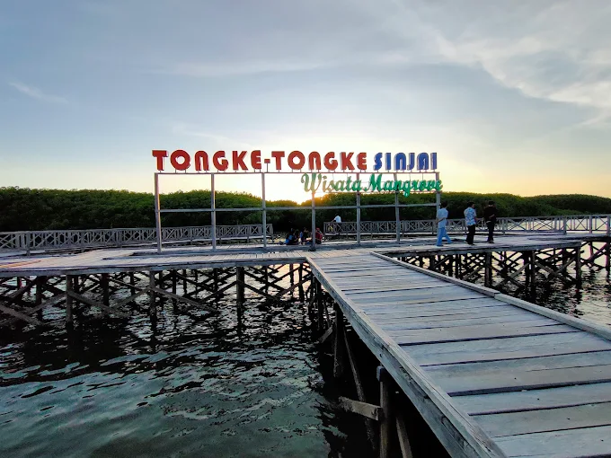
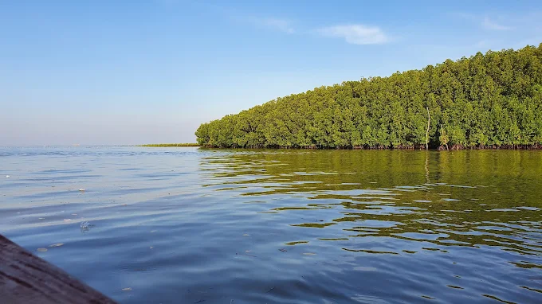
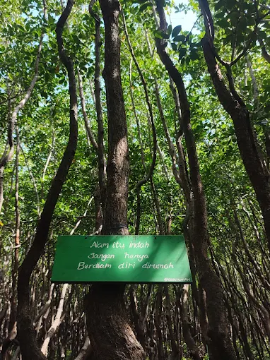
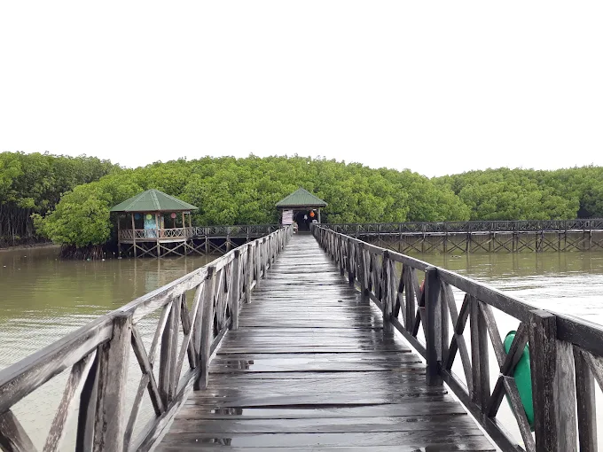
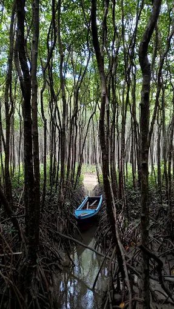
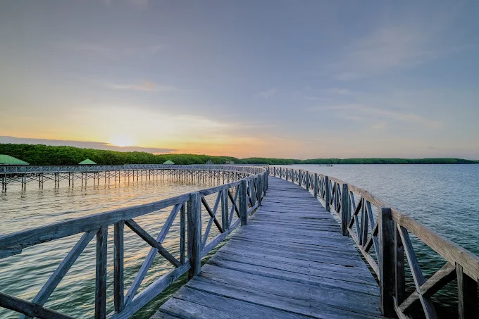
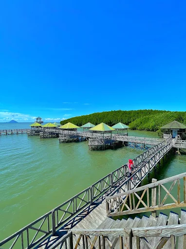
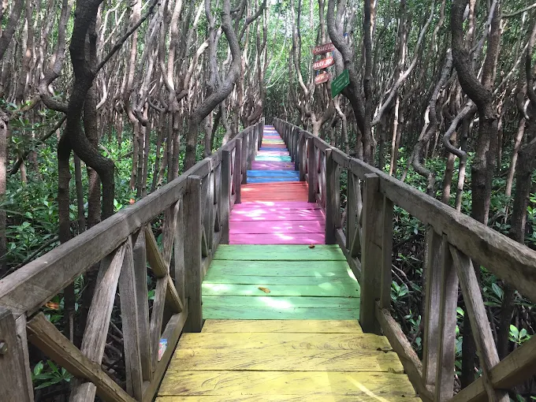

Selamat Datang di Tongke - Tongke

Tongke-Tongke adalah kawasan wisata mangrove yang terletak di Kecamatan Sinjai Timur, Kabupaten Sinjai, Sulawesi Selatan. Kawasan ini menawarkan pemandangan hutan mangrove yang hijau, suasana pesisir yang tenang, serta jalur kayu yang dapat digunakan pengunjung untuk menikmati keindahan alam.
Wisatawan dapat menikmati suasana alam, berjalan di atas jembatan kayu, berfoto, serta melihat kehidupan ekosistem mangrove secara langsung.
Tentang Tongke-Tongke
Sejarah Singkat
Kawasan mangrove Tongke-Tongke dikenal sebagai salah satu kawasan mangrove yang berkembang melalui upaya masyarakat dalam menjaga dan menanam kembali mangrove. Keberadaan hutan mangrove membantu melindungi wilayah pesisir sekaligus menjadi lingkungan bagi berbagai jenis flora dan fauna.
Keunikan Tongke-Tongke
Keunikan utama Tongke-Tongke terletak pada kawasan hutan mangrove yang berada di lingkungan pesisir. Pepohonan mangrove yang tumbuh di sekitar perairan menciptakan pemandangan yang khas dan memberikan suasana alami bagi pengunjung.
Manfaat Hutan Mangrove
Selain menjadi tempat wisata, hutan mangrove memiliki peran penting bagi lingkungan. Mangrove membantu melindungi garis pantai dari abrasi, menjadi habitat berbagai organisme, serta membantu menjaga keseimbangan ekosistem pesisir.
Daya Tarik
🌿 Hutan mangrove yang rimbun
🌊 Pemandangan kawasan pesisir
🌉 Jembatan kayu di tengah mangrove
📸 Spot untuk fotografi
🌅 Pemandangan matahari terbenam
🛶 Perahu yang menyusuri kawasan mangrove
🌈 Jalur warna-warni di kawasan wisata
Aktivitas yang Dapat Dilakukan
- Menjelajahi Hutan Mangrove Pengunjung dapat berjalan menyusuri jalur dan jembatan kayu sambil menikmati suasana hutan mangrove.
- Fotografi Kawasan mangrove menyediakan berbagai pemandangan menarik yang dapat digunakan sebagai latar untuk fotografi.
- Menikmati Pemandangan Pesisir Pengunjung dapat menikmati suasana perairan dan pepohonan mangrove yang berada di sekitar kawasan wisata.
- Mengamati Ekosistem Mangrove Pengunjung dapat mengenal lingkungan mangrove dan berbagai kehidupan yang terdapat di dalam ekosistem pesisir.
Galeri Tongke-Tongke







Tabel Informasi Wisata
| Informasi | Keterangan |
|---|---|
| Nama Destinasi | Hutan Mangrove Tongke-Tongke |
| Jenis Wisata | Wisata Alam dan Edukasi |
| Lokasi | Kecamatan Sinjai Timur, Kabupaten Sinjai |
| Provinsi | Sulawesi Selatan |
| Daya Tarik | Hutan mangrove dan kawasan pesisir |
| Lingkungan | Ekosistem mangrove dan pesisir |
Tips Berkunjung
- Gunakan pakaian yang nyaman.
- Gunakan alas kaki yang sesuai untuk berjalan di kawasan wisata.
- Bawa air minum.
- Jangan membuang sampah sembarangan.
- Jangan merusak atau mengambil tanaman mangrove.
- Jaga kebersihan dan kelestarian lingkungan.
- Berhati-hati saat berjalan di atas jembatan kayu.
Jaga Kelestarian Mangrove
Sebagai pengunjung, kita memiliki tanggung jawab untuk menjaga kawasan mangrove. Hindari membuang sampah sembarangan, merusak tanaman, atau melakukan aktivitas yang dapat mengganggu ekosistem. Dengan menjaga lingkungan, keindahan Tongke-Tongke dapat dinikmati oleh generasi berikutnya.